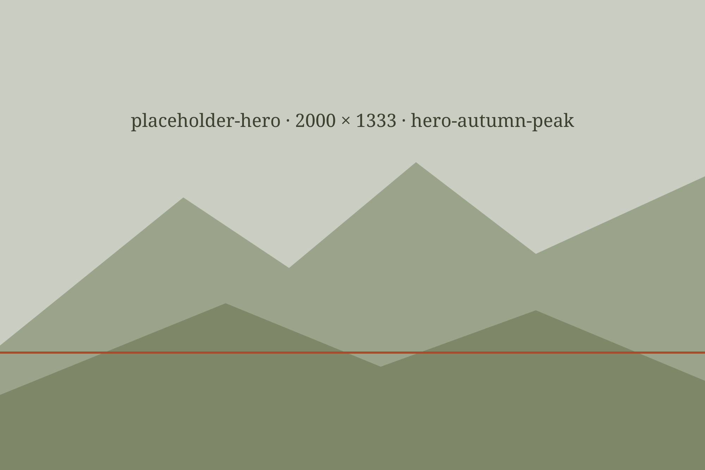
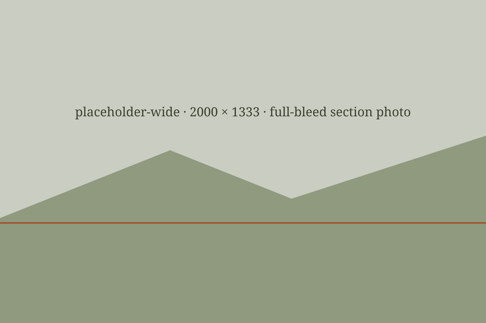
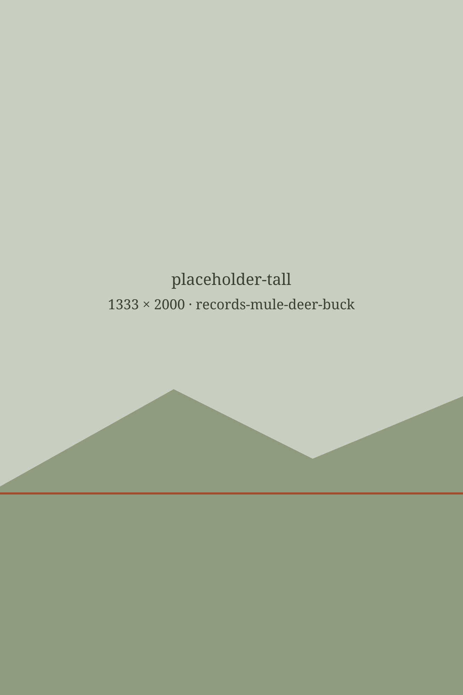

Software for Utah big-game ranches.
We're three Utah hunters building it — herd surveys, record-keeping, and guest operations — alongside the ranches that will run it. There's no product to demo yet. We're spending this season talking to owners and managers about what actually needs fixing, so the tool gets shaped by the people who work these operations.
Who we are
Arches Labs is Parker DeYoung, Parker Piombo, and Anton Smolyanyy. We're from Utah and we hunt — big game, waterfowl, most weekends we can get away. We've spent enough time around ranches and outfitters to know that most software built for this work was built by people who've never sat in a blind or walked a fence line at first light. We would rather build the thing you actually need, with you, than guess at it.
-
Parker DeYoung
REPLACE_ME — one line: what he hunts and what he does here.
-
Parker Piombo
REPLACE_ME — one line: what he hunts and what he does here.
-
Anton Smolyanyy
REPLACE_ME — one line: what he hunts and what he does here.

Aerial surveys and herd tracking
This is our starting point. We fly thermal drone surveys to count your herd and break it out by age class, then keep those numbers in one place season over season. Instead of paying for a helicopter survey that gives you one count on one day, you get a running inventory and trend lines you can plan against — how the buck-to-doe ratio is moving, whether your mature age classes are holding, where numbers are sliding before it shows up at harvest.
We work with the trail cameras you already run. We're not asking you to pull anything out or standardize on our hardware — the cameras feed the same inventory the flights do.

Herd records and inventory
This is the part we're still working out, and we want your read on it. Individual animals and their pedigree. Genetics and breeding history. Harvest records and scores. Mortality, culls, and the compliance paperwork the state asks for. Some of that matters a great deal on your operation and some of it you'd never open. Which is which? That's the conversation we want before we build a line of it.
Hospitality and guest operations
We're also looking at the guest side — booking hunts, scheduling guides, keeping lodging straight, and remembering which clients came back and what they hunted last time. We haven't committed to building this. If it's the part of your week that eats the most time, tell us and it moves up the list.
Contact
Three ways to reach us. A call is the most useful — 30 minutes, no demo, just questions about how your operation runs.
Or send a note
Six questions. The last one matters most.